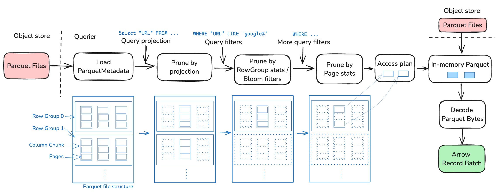
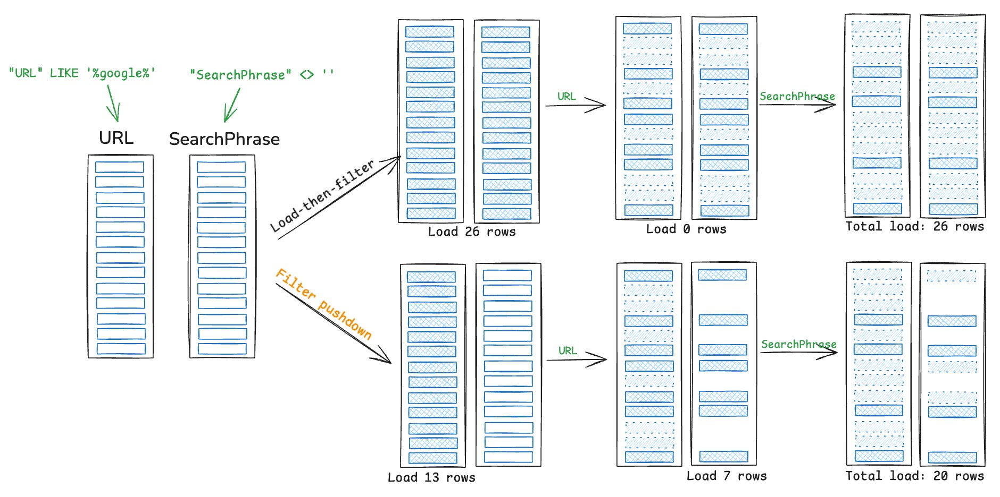

Note: special thanks to InfluxData for funding this blog post.
Apache Parquet has become the industry standard for storing columnar data, and reading Parquet efficiently – especially from remote storage – is crucial for query performance.
Apache DataFusion implements advanced Parquet pruning techniques to effectively read only the data that matters for a given query.
Achieving high performance adds complexity. This post provides an overview of the techniques used in DataFusion to selectively read Parquet files.
The pipeline
The diagram below illustrates the Parquet reading pipeline in DataFusion, highlighting how data flows through various pruning stages before being converted to Arrow format:

Background: Parquet file structure
As shown in the figure above, each Parquet file has multiple row groups. Each row group contains a set of columns, and each column contains a set of pages.
Pages are the smallest units of data in Parquet files and typically contain compressed and encoded values for a specific column. This hierarchical structure enables efficient columnar access and forms the foundation for the pruning techniques we’ll discuss.
Check out Querying Parquet with Millisecond Latency for more details on the Parquet file structure.
1. Read metadata
DataFusion first reads the Parquet metadata to understand the data in the file. Metadata often includes data schema, the exact location of each row group and column chunk, and their corresponding statistics (e.g., min/max values). It also optionally includes page-level stats and Bloom filters. This information is used to prune the file before reading the actual data.
Fetching metadata requires up to two network requests: one to read the footer size from the end of the file, and another to read the footer itself.
Decoding metadata is generally fast since it only requires parsing a small amount of data. However, for tables with hundreds or thousands of columns, the metadata can become quite large and decoding it can become a bottleneck. This is particularly noticeable when scanning many small files.
Reading metadata is latency-critical, so DataFusion allows users to cache metadata through the ParquetFileReaderFactory trait.
2. Prune by projection
The simplest yet perhaps most effective pruning is to read only the columns that are needed. This is because queries usually don’t select all columns, e.g., SELECT a FROM table only reads column a. As a columnar format, Parquet allows DataFusion to only read the columns that are needed.
This projection pruning happens at the column level and can dramatically reduce I/O when working with wide tables where queries typically access only a small subset of columns.
3. Prune by row group stats and Bloom filters
Each row group has basic stats like min/max values for each column. DataFusion applies the query predicates to these stats to prune row groups, e.g., SELECT * FROM table WHERE a > 10 will only read row groups where a has a max value greater than 10.
Sometimes min/max stats are too simple to prune effectively, so Parquet also supports Bloom filters. DataFusion uses Bloom filters when available.
Bloom filters are particularly effective for equality predicates (WHERE a = 10) and can significantly reduce the number of row groups that need to be read for point queries or queries with highly selective predicates.
4. Prune by page stats
Parquet optionally supports page-level stats – similar to row group stats but more fine-grained. DataFusion implements page pruning when the stats are present.
Page-level pruning provides an additional layer of filtering after row group pruning. It allows DataFusion to skip individual pages within a row group, further reducing the amount of data that needs to be read and decoded.
5. Read from storage
Now we (hopefully) have pruned the Parquet file into small ranges of bytes, i.e., the Access Plan. The last step is to make requests to fetch those bytes and decode them into Arrow RecordBatch.
Bonus: filter pushdown
So far we have discussed techniques that prune the Parquet file using only the metadata, i.e., before reading the actual data.
Filter pushdown, also known as predicate pushdown, is a technique that prunes data during scanning, with filters being generated and applied in the Parquet reader.

Unlike metadata-based pruning which works at the row group or page level, filter pushdown operates at the row level, allowing DataFusion to filter out individual rows that don’t match the query predicates during the decoding process.
DataFusion implements filter pushdown but has not enabled it by default due to some performance regressions.
We are working to remove the remaining performance issues and enable it by default, which we will discuss in the next blog post.
Conclusion
DataFusion employs a multi-step approach to Parquet pruning, from column projection to row group stats, page stats, and potentially row-level filtering. Each step may reduce the amount of data to be read and processed, significantly improving query performance.